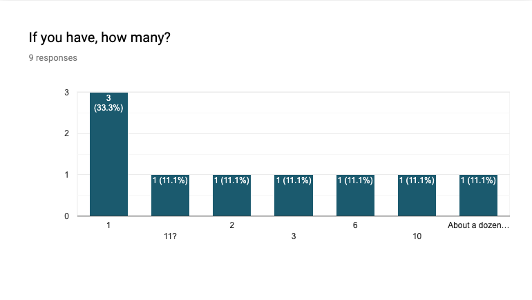
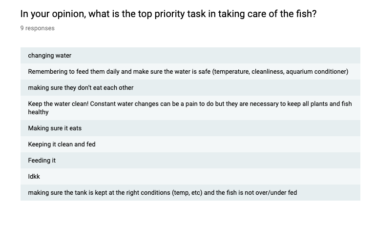

Research Insight

field research - Aquatic animal section in a pet store

field research - Filteration and air supply system
Survey
A variety of fish were raised by family or individuals with number ranging from 1 to a dozen. Keeping the water clean was mentioned to maintain healthy environment for fish by 7 interviewers out of 9.
 Literature Review
There are popular demand in fish raising community (Reddit). There are communities on Reddit that primarily focuses on discussing what they do to raise their fish and present their pets to other members.
There are extensive research papers on marine animals and how home raised fish are prone to stress and malnutirition due to many environmental factors such as water quality problem and mental constraints.
Interviews
“People often do not realize how uneducated they are in terms of raising fish. They unknowingly have fish in such small bowls or plastic bags and expects them to survive. It is inhumane.”
- M, an experienced fish owner.
“We do not try to offend new comers here; however, we do our best to let them know that raising a gold fish is particularly tricky and they need 20 gallon fish tank to start with and it is a lot of commitment.”
-A, a PetSmart Aquatic Animal Manager